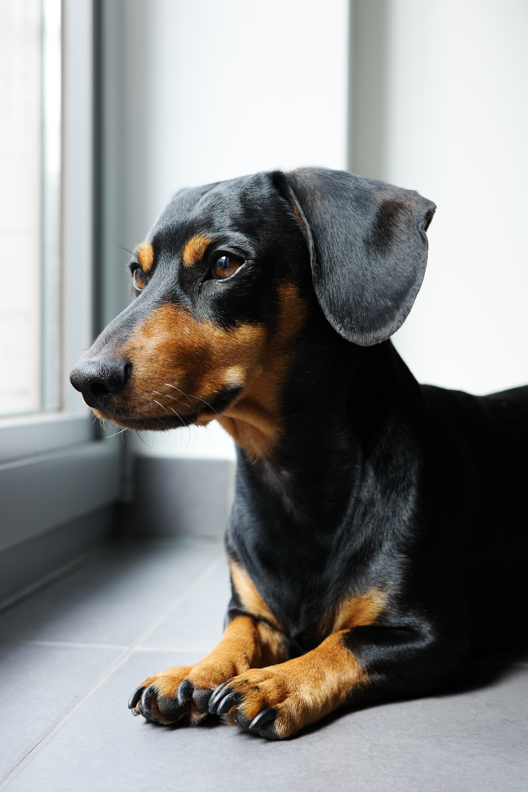

One of my favorite dog breeds is a Dachshund. Their affable personality and high energy makes them game for most any adventure. Coming from the hound group, they enjoy outdoor activities like hiking, which lets them indulge their instinctual love for following scents. Truly, with this breed, there's something for every taste—they come in more colors, sizes, and coat types than any other AKC-recognized breed.
